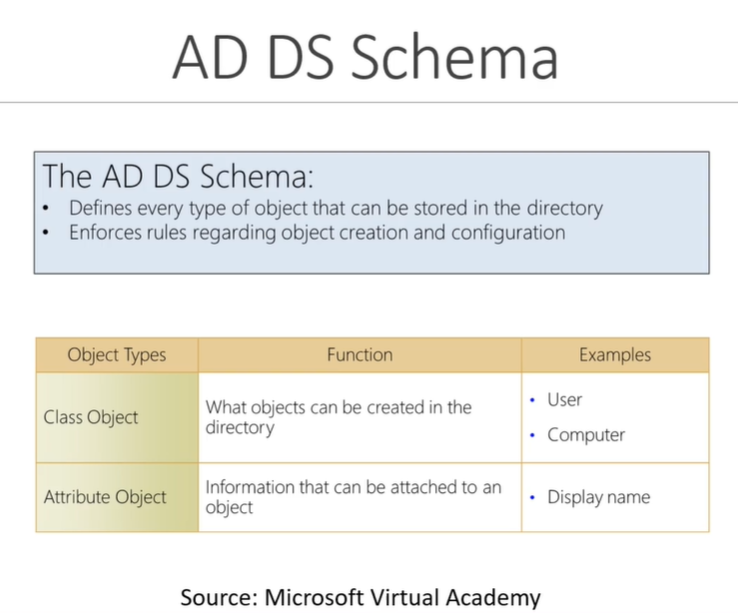

What is Active Directory Schema ?_?
- U can think of it as blueprint or rule book.

What are Domains ?_?
Used to group things together.

What are Tree's ?_?
It is a group of domains.
U have a parent and the children and they share namespace and they share some trust b/w them.

What is a Forest ?_?
It is a collection of tree's.

Inside of a AD there are somethind called as Organizational Units (OUs)

Trust ?_?
how we have access b/w resources

Lastly we have Objects ?_?
Objects is what is going to be inside of our Ous

Domains -> Trees -> Forests -> Trust
|
V
Ous -> Objects
So let's break it down one more time we have
Domains (i.e.used to group and manage objects in an organization)
If we have multiple Domains we have what is called as Tree (i.e. it might have Parent domain and might have a Children domain)
When we have multiple sets of Tress we have something called Forest
Iside of this domains we have something called as Ous
And these Ous consist of objects.
Across Forest or Across Domain we have what is called as Trust
And this Trust could be Directional (One Domain Trust another Domain)
or it could be Transitive (i.e. One domain trust another domain and than Trust everything else that domain also trust's )